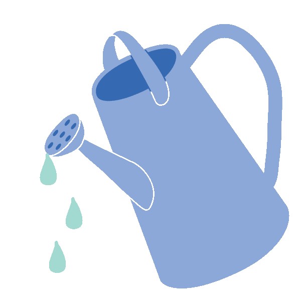

♥
Please wait a moment for your results to display!♥
Congratulations you saved Kg this semester! This puts you in the stage of Succession, !

To learn more about succession,
To find out more about your carbon savings, ask any Eco-Rep member about the Green Resident Program (GRP) Survey!